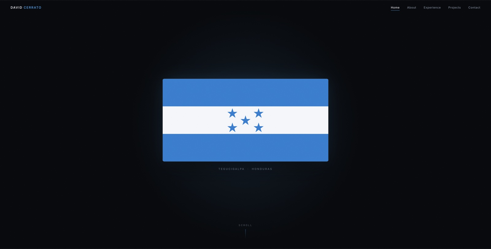

There are around 8,000 undergraduateCMU students, yet only one is from Honduras,and that is me.
Scroll
01 — About
About Me
I am currently studying Finance and pursuing an additional major in
Statistics & Data Science with a minor in Economics, combining
rigorous quantitative training with a deep passion for financial
markets.
My professional interests lie at the intersection of finance and
data, with a long-term aspiration to break into data science or
finance, specifically in private equity, where I hope to master the
art of investment, business valuation, and value creation.
Ultimately, my greatest ambition is to take everything I learn and
bring it back home — investing in Honduras and contributing to the
growth of my country.
Beyond finance and data science, I am an avid soccer player with
experience competing in international tournaments across Mexico and
Europe. I am a highly social and people-driven individual, always
looking to connect and build meaningful relationships.
Feel free to reach out!Click to connect
Selected from a pool of 30+ applicants through a technical and behavioral interview process.
Weekly curriculum across private equity, hedge funds, and credit research, paired with one-on-one mentorship.
Hands-on training in value investing, three-statement financial modeling, and LBO modeling.
June — July 2026Miami, FLInternship
Financial Analyst
ImaageQ Corporation
Analyzed financial models and investor relations strategy alongside ImaageQ's CFO for a seed round, covering valuation frameworks, term sheets, and pitch materials, and presented them to institutional and accredited investors with the executive team.
Developed competitive analysis and market positioning strategy for a spatial intelligence startup operating in the AR real estate commerce space.
Translated technical product architecture into institutional investment narratives, creating investor-facing documents and scenario planning (2026–2029) for potential stakeholders.
Supported go-to-market strategy and startup fundraising from pre-revenue stage through pilot validation, learning firsthand how founders build companies from the ground up.
July 2025San Lorenzo, HondurasInternship
Administration Intern
Grupo Agrolíbano
End-to-end operational internship at Honduras's second-largest melon exporter, spanning field-level operations through corporate administration.
Followed the full melon-cultivation cycle, building a working understanding of the supply chain and production workflow.
Supported the management team on organizational tasks and the coordination of daily business activity.
Sat in on B2B client and shipping meetings covering contract fulfillment, limited freight options, and long transit times.
July 2024Miami, FLInternship
Wealth Management Intern
Andbank
Executed and processed client transactions while analyzing portfolios across asset classes.
Researched equities, fixed income, and mutual funds, including earnings analysis of portfolio companies.
Prepared and distributed daily market briefs to clients and internal teams.
Joined direct calls with fund managers, gaining exposure to asset management discussions.
03 — Projects
Projects
This portfolio is the first entry. Each new project from 15-113 gets
added here as the semester progresses.

01
Personal Portfolio Website
My first web project, built from scratch with no framework. The
homepage opens on the Honduran flag and dissolves it into a single
statement as you scroll — driven by scroll position rather than
a timer, so the visitor controls the pace.